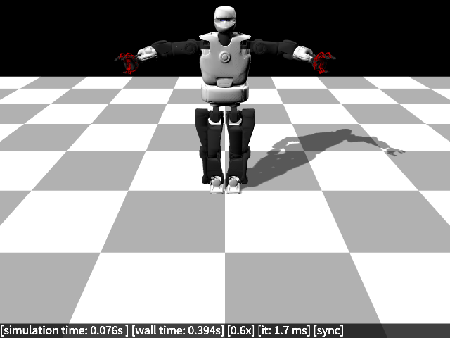
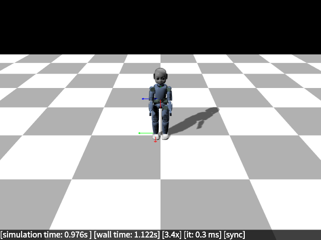
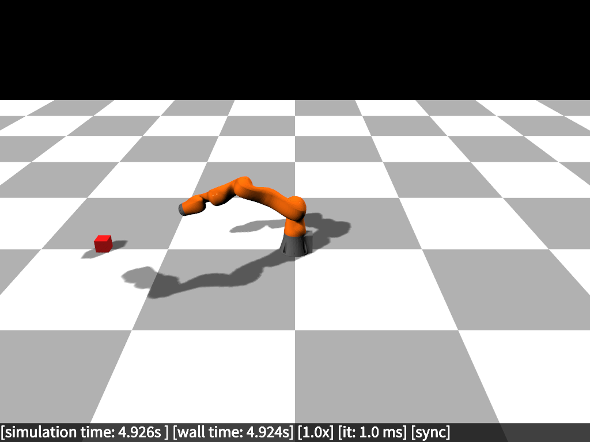
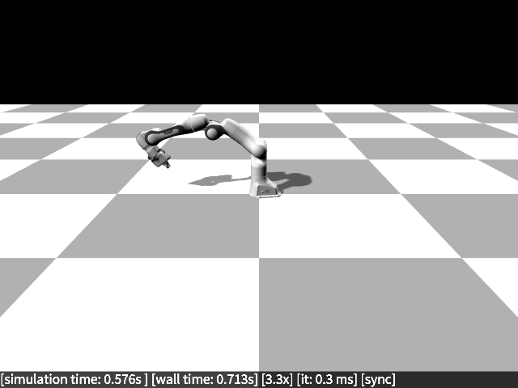

RobotDART
RobotDART is a C++11 robot simulator (with optional Python bindings) built on top of the DART physics engine. The RobotDART simulator is intended to be used by Robotics and Machine Learning researchers who want to write controllers or test learning algorithms without the delays and overhead that usually comes with other simulators (e.g., Gazebo, Coppelia-sim).
For this reason, the simulator runs headless by default, and there is the possibility of rendering the scene (e.g., through a camera sensor) without opening a graphics window. All RobotDART's code is thread-safe (including graphics and camera sensors), and thus enables its users to use their code in parallel jobs in multicore computers.

In a few words, RobotDART combines:
- a physics engine (DART)
- an optional graphics engine (Magnum)
- a few sensor classes (IMU, force/torque sensors, cameras, etc.)
- a curated URDF library
- ... and a few useful features to make the life of roboticists/researchers easier
  
Main Features
- Modern C++ code that makes it easy to develop environments and applications
- Fast and reliable simulation of robotic mechanisms and their interactions (through the DART physics engine)
- A structured
Robotclass that enables a unified creation and access to all important values: in RobotDART you can load any robot description file (URDF, SDF, SKEL, and MuJoCo files) with the same command, and all robot measurements can be queried without using any DART code - A generic
RobotControlclass that enables fast prototyping of any type of controller - A generic
Sensorclass that allows the creation of any kind of sensor - A growing list of already implemented sensors, that includes 6-axis
ForceTorque,IMU,RGB, andRGB-Dsensors - A simulation class (
RobotDARTSimu) that handles multiple robots and sensors, and allows for step-by-step simulation - A growing list of supported robots along with edited and optimized models to be used with RobotDART (see the robots page for details and examples):
- PAL Talos humanoid
- Franka Emika Panda
- KUKA LBR Iiwa (14kg version)
- IIT iCub humanoid (without hands)
- Unitree A1 quadruped robot
- Dynamixel-based 6-legged robot
- A simple arm for educational purposes
- and you can use any URDF
- A custom graphical interface built on top of Magnum that allows generic customization
- Support for windowless OpenGL context creation (even in parallel threads!) to allow for camera sensor usage even in parallel jobs running on clusters
- Support for video recording in simulation time (i.e., not affected by delays of simulator and/or graphics) for visualization or debugging purposes
- Full-featured Python bindings for fast prototyping
- RobotDART runs on any Linux distribution and Mac OS
What RobotDART is not
- RobotDART is primarily intended to be non-interactive (run a simulation, record/view the result),
- Interaction is limited to changing the view and your own code. No GUI for adding objects or interactively build an environment,
- RobotDART is not optimized for wheeled robots,
- RobotDART is not optimized for simulating complex (e.g., mountain-like) terrains.